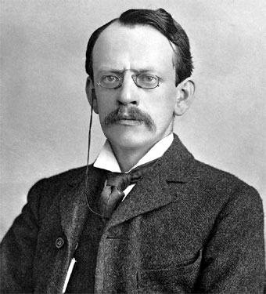

Quem foi Thomson?

Joseph John Thomson (1856-1940) foi um físico britânico. Descobriu o elétron. Recebeu o Prêmio Nobel de Física, em 1906. Foi Diretor do Laboratório Cavendish, da Universidade de Cambridge.
Joseph John Thomson nasceu em Cheetham Hill, perto de Manchester, Inglaterra, no dia 18 de dezembro de 1856. Seu pai comerciava livros raros e antigos. Joseph era leitor ávido e bom estudante.
Com apenas 14 anos de idade foi enviado para o Owens College de Manchester, hoje Vitoria University of Manchester, onde ingressou no curso de Engenharia.
Com 19 anos, completou seus estudos de engenharia e com uma bolsa de estudos foi para o Trinity College, na Universidade de Cambridge, no qual colou grau em matemática em 1880.
Nesse mesmo ano assumiu o cargo de pesquisador no laboratório Cavendish, onde empreendeu as primeiras pesquisas sobre eletro-magnetismo.
Em 1881 escreveu um artigo científico que foi o precursor da teoria de Einstein. Nele mostrava que massa e energia se equivalem. Tinha então 24 anos.
A qualidade de seu trabalho valeu-lhe a eleição para membro da Royal Society em 1884 e o acesso à cátedra de física no laboratório Cavendish.
Em 1890 casa-se com Rose Paget, aluna de seus cursos avançados. Em 1892 nasceu seu filho George Paget Thomson, que posteriormente recebeu o Prêmio Nobel de Física.